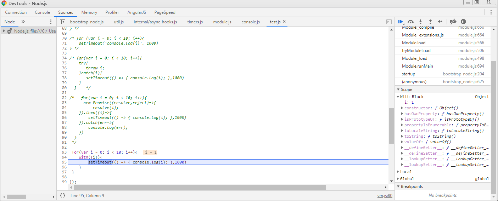

示例代码托管在：http://www.github.com/dashnowords/blogs
博客园地址：《大史住在大前端》原创博文目录
华为云社区地址：【你要的前端打怪升级指南】
改造下面的代码，使之输出0 - 9，写出你能想到的所有解法。
首先作为前端开发者，你起码得知道下面的代码会输出什么，强烈建议自己动手试试能写出多少种解法。
for (var i = 0; i< 10; i++){
setTimeout(() => {
console.log(i);
}, 1000)
}console.log(i)在执行时，会按照词法作用域来取得循环条件中的变量 i的值，本题的基本思路实际上就是如何在console.log语句和for循环条件之间添加（或修改）代码来隔离变量 i的词法作用域。
解法一：最容易想到的方法——ES6块级作用域
//最容易想到的就是使用let实现的局部作用域
for (let i = 0; i< 10; i++){
setTimeout(() => {
console.log(i);
}, 1000)
}
//变式
for (var i = 0; i< 10; i++){
let a = i;
setTimeout(() => {
console.log(a);
}, 1000)
}解法二：大多数前端曾接触过的第一种方法——IIFE（立即执行函数）
for(var i = 0; i < 10; i++){
(function(i){
setTimeout(() => {
console.log(i);
},1000)
})(i);
}解法三：比较优雅的做法——setTimeout可以接收多个参数
//setTimeout的函数签名是setTimeout(fn, delay, ...params)，params会作为fn执行时的实参传入
for (var i = 0; i< 10; i++){
setTimeout((i) => {
console.log(i);
}, 1000, i);
}解法四：利用函数方法bind为setTimeout传入预设参数
/*Function.prototype.bind(thisArg, ...args)
* 会得到一个新函数，新函数执行时预先设置了this和一部分参数，相当于把setTimeout改造成了偏函数
* bind执行后，setTimeout的第一个参数仍然是一个函数。
*/
for (var i = 0; i < 10; i++){
setTimeout(((i) => {
console.log(i);
}).bind(null,i), 1000);
} 解法五：利用禁术with
with的作用是延长作用域链会在词法作用域末端继续添加参数定义，在正式开发中通常是禁用的。下图右侧的scope一栏中就可以看到local作用域之上又多了一个with引入的作用域，其中就包含传入的i值。

for(var i = 0; i < 10; i++){
with({i}){
setTimeout(() => { console.log(i); },1000)
}
} 解法六：利用Promise传递决议结果来隔离作用域
//在每一轮循环中的i作为实参传递给promise的onFinished函数实现作用域隔离
for(var i = 0; i < 10; i++){
new Promise((resolve,reject)=>{
resolve(i);
}).then((i)=>{
setTimeout(() => { console.log(i); },1000)
}).catch(err=>{
console.log(err);
})
}解法七：利用try...catch来隔离作用域
for(var i = 0; i < 10; i++){
try{
throw i;
}catch(i){
setTimeout(() => { console.log(i); },1000)
}
} 解法八：浏览器环境下setTimeout第一个参数可以为undefined(node.js中会报错)
//console.log相当于同步运行，跟setTimeout实际没什么关系了
for (var i = 0; i< 10; i++){
setTimeout(
console.log(i)
, 1000)
}解法九：篡改console.log
let result = [];
let consoleLog = console.log;
console.log = (n)=> {
result.push(n);
if(result.length === 10) result.map((i,id)=>consoleLog(id));
}
for(var i = 0; i < 10; i++){
setTimeout(() => {
console.log(i);
},1000)
}
//变式——稍微有点欠扁
console.log = (function(){
let consoleLog = console.log;
let i = 0;
return n => i++ === 9 && consoleLog('0,1,2,3,4,5,6,7,8,9');
})();
for(var i = 0; i < 10; i++){
setTimeout(() => {
console.log(i);
},1000)
}解法十：不按套路出牌的骚操作
for (var i = 0; i < 10; i++){
setTimeout(() => {
console.log(i++ % 10);
}, 1000);
}
//变式
for (var i = 0; i < 10; i++){
setTimeout(() => {
console.log(i++);
}, 1000);
}
i = 0;